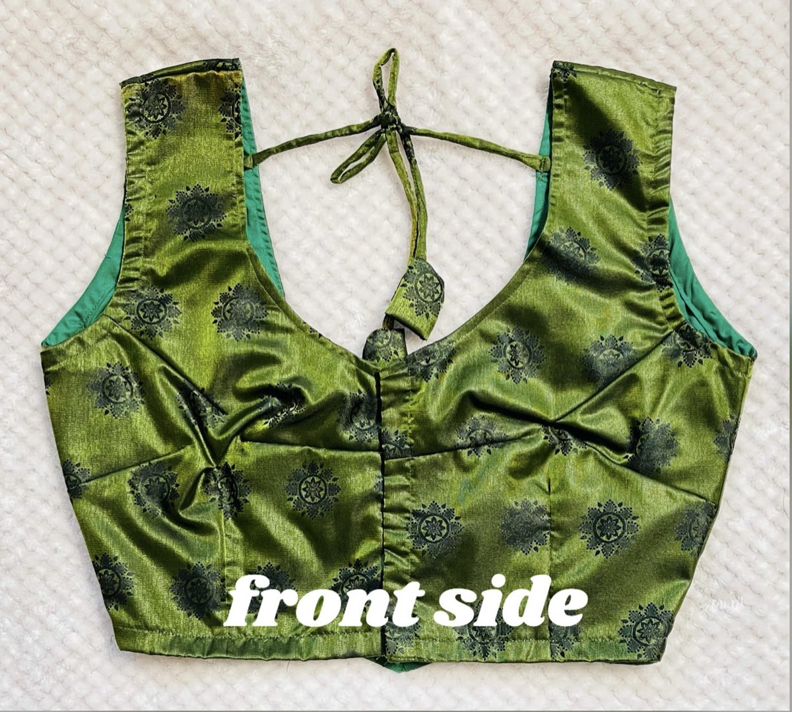

01 · Indian wearBlouses, stitched or altered
Saree and lehenga blouses are a large part of Rutika's work. She can stitch a new blouse from your fabric or rework one that came in the wrong size.
- New blouse stitchingFrom your fabric, fitted to you
- ResizingTaking in or letting out a blouse that doesn't fit
- Necklinese.g. a 6″ neck made 8″ deep
- Sleeves & cupsRemoving sleeves or cups, changing the shape
- FasteningSide zipper swapped for back hooks
- Heavy work blousesAltered while keeping the design intact